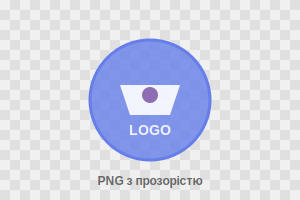

Швидкі зображення = Кращий UX
Формати зображень
JPEG
Ідеально для фотографій з багатьма кольорами
- Хороше стиснення
- Підтримка мільйонів кольорів
- Без прозорості
PNG
Для графіки з прозорістю та логотипів
- Підтримка прозорості
- Без втрат якості
- Більший розмір
WebP
Сучасний формат з кращим стисненням
- На 25-35% менший
- Прозорість та анімації
- Потребує fallback
Техніки оптимізації
Адаптивні зображення
<img src="image-small.jpg"
srcset="image-small.jpg 480w,
image-medium.jpg 768w,
image-large.jpg 1200w"
sizes="(max-width: 480px) 100vw, 50vw"
alt="Адаптивне зображення">Lazy Loading
<img src="image.jpg"
alt="Зображення"
loading="lazy">Порівняння продуктивності
Без оптимізації
Розмір: 2.4 МБ
Час: 8.2 сек
Запитів: 47
З оптимізацією
Розмір: 640 КБ
Час: 2.1 сек
Запитів: 18
Інструменти
Онлайн
- TinyPNG/TinyJPG
- Squoosh
- Compressor.io
CLI
- ImageOptim
- Sharp
- WebP tools